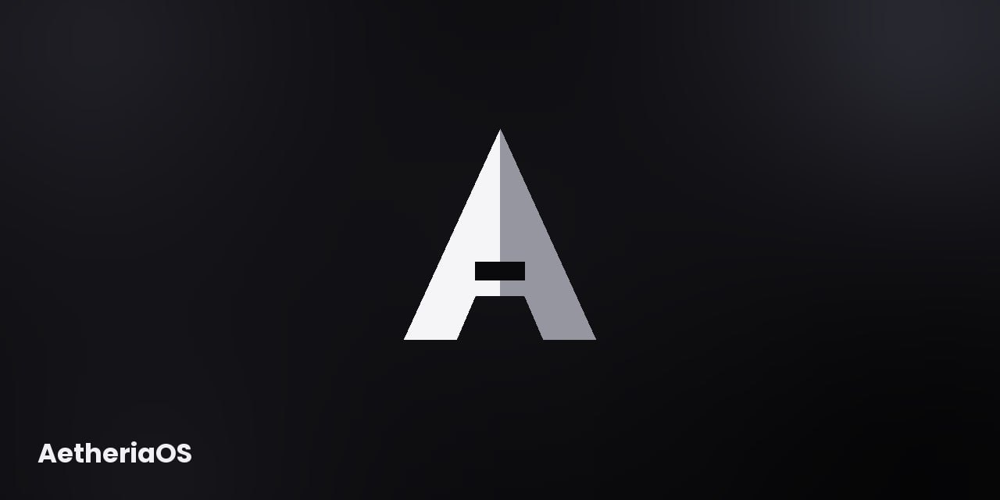

1. AetheriaOS

Suatu hari saya ingin membuat sebuah sistem operasi sendiri yang bernama AetheriaOS dan saya mengunakan base dari LineageOS saya mengembangkam sendiri dan merekrut beberapa orang yang akan jadi tim saya, walaupun ada sedikit kendala pada source nya saya tetap berusaha memperbaiki sendiri.
2. Sangue e polvora

Saya ingin membuat game sendiri yang bertema retro. dan saya membuat pertama kali mengunakan unity engine tapi saya merasa kesusahan dan saya pindah ke godot engine dan saya memakai cara nekat membuat game sambil menontom tutorial agar cepat bisa mengunakan engine tersebut. dan saya ingin menciptakan game dengan genre retro, horror, gore dan hardcore karena semua mekanisme nya lambat.